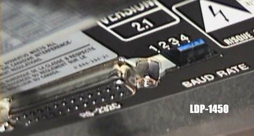
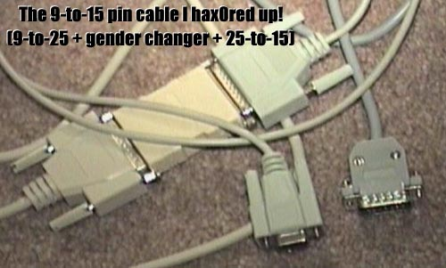
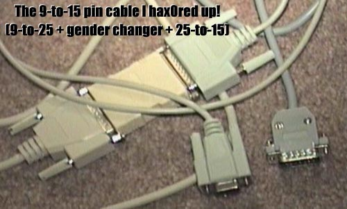
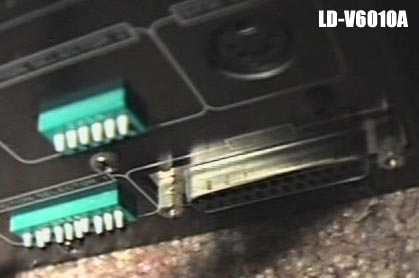
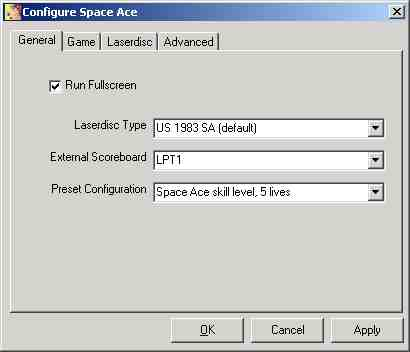

DAPHNE v0.99.3 (September 21st, 2001)
A Laserdisc Arcade Game Emulator
Last updated September 21th, 2001
DAPHNE is Free Software, released under the
GNU General Public License
DAPHNE's source code is copyrighted by its respective authors. It does NOT contains any code based on any original laserdisc arcade game ROM images, nor does it contain any proprietary code of any kind. In short, DAPHNE's only relationship to original laserdisc arcade games is that it happens to be quite compatible with the original hardware.
DAPHNE may not legally be distributed with proprietary ROM images or laserdisc video/audio files. If you see anyone selling a "complete DAPHNE CD", you can be assured that this is definitely a Bad Thing.
The DAPHNE
home page is http://daphne-emu.com/
CONTENTS
2.0 System Requirements
2.1 More on requirements
3.0 Installation
3.1 Windows Installation
3.2 GNU/Linux Installation
4.0
Laserdisc Player Setup
4.1 Sony Laserdisc Player
4.2 Most Pioneer Players
4.3 Pioneer LD-V6000
4.4 Hitachi
4.5 Philips
5.0
Running DAPHNE
5.1 Beginner
5.2 Expert
5.3 DAPHNE Controls
APPENDIX A: Using a real Dragon's Lair scoreboard with DAPHNE
DAPHNE is a Free laserdisc game emulator that allows one to play laserdisc arcade games on one's PC, optionally using a real laserdisc player. Using DAPHNE, one can play the following laserdisc arcade games (some of which don't work perfectly yet) :
Astron Belt
Cliff Hanger
Cobra Command (running on Astron Belt hardware)
Dragon's Lair (US)
Esh's Aurunmilla
Galaxy Ranger
Space Ace (US)
Star Blazer
Super Don Quix-ote
Thayer's Quest
One can either use mpeg's to simulate the game's laserdisc or one can use a real laserdisc player and a real laserdisc. Video overlay only works when using mpeg, but some games (Dragon's Lair, Space Ace, and Thayer's Quest) do not use video overlay, so a real disc would be a more pure experience in this case.
DAPHNE is available for either GNU/Linux or Windows 95/98/ME/2000. If you haven't yet been enlightened by GNU/Linux and are still chained in the Windows world, then Windows 2000 is recommended and Windows ME is specifically recommended against. If you were one of the poor saps suckered into installing ME, then we pity you and urge you to switch to GNU/Linux immediately errr I mean switch to Windows 2000 immediately. Not many people have tried DAPHNE with XP yet, but if I were to guess right now, I'd say that it probably sucks (Windows XP, not DAPHNE .. hehe).
|
Software Requirements |
|
|
GNU/Linux 2.2 or better |
Windows 95/98/ME or Windows 2000 |
|
DirectX 5, latest video card drivers |
|
|
Xfree86 4.x with Xv support _highly_ recommended
|
If using mpeg instead of a laserdisc player, you'll need video/audio files
to approximate the laserdisc video.
|
|
Appropriate laserdisc game's ROM images |
|
|
Hardware Requirements |
|
|
Utilizing an Actual Laserdisc Player |
Utilizing MPEG Video |
|
Pentium 100 MHz PC or better with 16MB RAM and available serial port |
Pentium III 500 MHz PC or better with 128MB of RAM and DirectX 5 compatible video card. For best performance, consider a 1ghz machine with 512 megs of RAM :) |
| Compatible laserdisc player (See supported laserdisc players ) |
A video card capable of YUV hardware acceleration is highly recommended.
TNT2's are cheap and work great for this. |
| The arcade game's original laserdisc | |
|
Optional Hardware |
|
|
Sound card (though highly recommended) |
|
|
Actual Dragon’s Lair scoreboard PCB |
|
2.1 MORE ON REQUIREMENTS
If you plan to use a real Laserdisc Player
NTSC or PAL laserdisc players will work. Everyone in the US and Canada will want an NTSC player. Other parts of the world, such as Europe, use PAL.
You will need to get a cable for your player. Cables can be purchased at Radio Shack and CompUSA, or anywhere that Belkin products are sold. You can buy direct from Belkin as well. The cable you want depends on the type of laserdisc player you have. Cable information can be found under the Laserdisc Player Setup section of this documentation.
ROM Images
The ROM images are the software from the arcade that accepts the user's input and controls the original laserdisc player. Some ROM images also control video overlay. DAPHNE uses the original software from the arcade machine to run the emulated hardware. The ROMs are not included with DAPHNE for legal reasons.
MPEG files
No doubt most people will be wondering where to get MPEG files to play these laserdisc games. The official answer is, make your own using video capture equipment and an original laserdisc that you own. A guide can be found here . Since we know many people won't like that answer, let us remind you that this is a free project worked on by volunteers and you are not obligated to use it at all. Also, some of you may want to check out Digital Leisure 's products. They sell commercial versions of some laserdisc games and we encourage you to buy their products. We vehemently discourage any piracy of Digital Leisure's products and will aggressively stamp it out wherever encountered.
3.1 WINDOWS INSTALLATION
1 -
Unzip
the daphne .zip file into a directory of your choice, being
sure to preserve directory structure (c:\daphne works fine).
2 - Place the uncompressed game ROM images into the appropriate
directory within the ROMS directory. Note: A text file
exists in each of these directories that outlines which roms are
required.
3.2 GNU/LINUX INSTALLATION
NOTE : It is expected that
you have write access to the daphne directory and to the directory that houses
the mpeg files (if applicable). I realize that some linux users will
not like this, but it suits me just fine for now.
1 - Extract the daphne .tar.gz file into a place where you have write
access (your home directory is fine).
2 - Put the uncompressed ROM images for any game you want to play inside
the game's folder in the 'roms' subdirectory. A text file exists
in each of these directories that outlines which roms are required.
If you are utilizing MPEG for your video source, you can skip this section.
DAPHNE controls the laserdisc player by means of serial cable that runs from the back of your computer into the back of the laserdisc player. The type of cable you need depends on the type of laserdisc player that you have.
4.1 SONY LASERDISC PLAYERS
Sony players are by far the easiest Laserdisc players to setup and
people who use DAPHNE seem to prefer Sony laserdisc players over other
choices. For the Sony players, you'll need a standard null-modem
cable or a regular serial cable with a null modem adapter. They
can be purchased at Radio Shack. One end of the cable should have
a male 25-pin RS-232 type connector to connect to the player. While
older computers have a 25 pin serial port, most newer ones only
have 9-pin serial ports. Make sure you buy the right cable and/or
adapters for your rig!


You also will need to make sure the dip switches in the back of
your player are set to operate at 9600 baud (or 4800 if you really
want to). A Sony player usually includes a diagram on the back that
shows how to set the dip switches properly.

To test your Sony player, download the program LDP.EXE and run it. If LDP.EXE can control your player, then DAPHNE will work.
4.2 NEWER PIONEER LASERDISC PLAYERS
Most of the newer Pioneer laserdisc players have an odd 15-pin
connector in back. Cables that fit this 15-pin connector are rare and,
as far as I know, can only be
purchased from Pioneer directly
! The cable you want depends on what type of serial port you
have on the back of your computer. If you have a 25-pin serial
port (older computers) you will want part # CC-03. If you have
a 9-pin serial port, you will want part # CC-13. Mentioning the part
# to the person you talk to at Pioneer will likely help a great deal
since they will probably have no clue what you are talking about
otherwise =]. If you know what you're doing, you can also
make your own cable
.
 

You also need to set the dip switches in the back of your player. Some Pioneers operate at 9600 baud, others only operate at 4800. DAPHNE can handle both. There is usually a diagram on the back of your player that shows how to set the dip switches properly.
To test your Pioneer player, download the program SVC.EXE and run it. If it works without giving errors, DAPHNE will work. Note: This utility may not work under Windows NT/2000.
4.3 PIONEER LD-V6000 LASERDISC PLAYERS
The LD-V6000's use a straight (NOT NULL) 25-pin serial cable,
which is a lot better than the 15-pin cable that the newer Pioneers
use. Connecting the LD-V6000 to your computer is easy because 25-pin
serial cables are very common.

You also need to set the dip switches for the LD-V6000's. The dip
switch settings are documented
here.

To test your LD-V6000, download this program. If it works without giving errors, DAPHNE will work. Note: This utility may not work with Windows NT/2000.
4.4 HITACHI VIP9550 (and compatible) LASERDISC PLAYER
Hitachi players need a STRAIGHT 25-pin cable.
4.5 PHILIPS LASERDISC PLAYERS
Philips players need a customized serial cable which is outlined in
the philips.cpp file in the source code. I don't have the info handy
at the moment hehehe.
5.1 BEGINNER
The easiest and quickest way to play is by using the Graphic User Interface (GUI). The GUI is currently only available in the Windows version.

1 - If using an MPEG, be sure your framefile is pointing the the correct path. Please see the DAPHNE Laserdisc Conversion Tutorial for more information on framefiles and creating a DAPHNE compatible MPEG and OGG. A sample framefile has been provided in the archive named dl.txt.
2 - After double-clicking DaphneLoader, you will be presented with the above screen for game selection. Your first task is to click on "configure" for the game of your choice.

3 - There are a number of options within the configuration tabs that are fairly self explanatory. If utilizing an actual laserdisc, you must select the correct laserdisc type under the "general" tab. The other critical settings are stored under the "laserdisc tab"

4 - If using MPEG, select "Virtual LDP" for the player type and specify your MPEG Information File. For laserdisc, select the appropriate laserdisc player and designate the correct serial port and baud rate.
5 - Click "OK" and your settings will be saved. You can then click on "Start" and if all goes well, the game will begin. It takes a few seconds for the ROM to initialize itself.
6 - If something goes wrong, read the troubleshooting section.
5.2 EXPERT
DAPHNE can be manipulated exclusively through the command-line in both Windows and Linux.
These expert instructions are not intended to replace the beginner instructions, only to append to them. Not everything covered in the beginner section will be repeated here.
A typical command-line invocation looks like this for mpeg:
daphne lair vldp -framefile lair.txt -fullscreen
A typical command-line invocation looks like this for a real laserdisc player:
daphne lair pioneer -baud 9600 -port 1 -latency 10
5.3 COMMAND LINE PARAMETERS
These commands are sequenced in the order in which they should appear in the command line:
SELECT GAME TYPE: Possible options: lair, ace, dle, cliff, gtg, superdon, sdq, sdqshort, thayers, speedtest, seektest, cputest, fftest, ffr, astronp, esh, astron, galaxy, laireuro, blazer, cobraab
LASERDISC PLAYER TYPE: Possible options: sony, pioneer, v6000, hitachi, philips, vldp, noldp, combo (combo allows a LDP and VLDP to run simultaneously)
FRAMEFILE SPECIFICATION: (only for vldp or seektest) -framefile <filename> (specify full path to framefile if not located in root of Daphne directory.)
DISABLE SOUND: -nosound
EXTERNAL SCOREBOARD: -scoreboard
EXTERNAL SCOREBOARD PORT SPECIFICATION: -scoreport <value> Specifies which parallel port is connected to your external scoreboard (if you've indicated that you have one). 0 means LPT1, 1 means LPT2. Default is 0.
SERIAL PORT SPECIFICATION: (only for LD players) -port <value> Specifies which serial port to use. 0 is the first serial port (COM 1), 1 is the second, and so on. Default is 0.
BAUD RATE SPECIFICATION: (only for LD players) -baud <value> Specifies which baud rate to use. 9600 baud is the default.
LATENCY: (for VLDP and LDP) -latency <value> Sets the search latency. This is how long, in milliseconds, that Daphne will pause before searching for a frame. If you see frames at the end of a scene that you're not suppose to see, adjust this settings. Default value is 0.
FULLSCREEN: -fullscreen Sets MPEG video to play in fullscreen mode. If using a real laserdisc player, this paramater is applied to the virtual scoreboard.
LASERDISC TYPE FRAME MODIFIER: (for LD only) Possible options: -pal_dl, -pal_sa, -pal_dl_sc, -spaceace91
DIP SWITCHES: (For DL and SA only) -bank <bank #> <switches> Bank # is 0 or 1 for DL and SA and the switches are positioned as follows: 76543210. Example: -bank 0 00110000 (would turn on switches 4 and 5 on bank 0)
5.3 DAPHNE CONTROLS
You can use the keyboard and/or joystick with DAPHNE.
ESC
- Quit the game
5 and 6 - Insert Coin (coin
chutes)
1- Player 1 Start (and
"FEET" in Cliffhanger)
2- Player 2 Start (and "FEET"
in Cliffhanger)
Arrow Keys or Joystick -
Directional Movement
CTRL , Space Bar, or Joystick
Button - Sword button/Laser Gun/"HANDS" in Cliffhanger/etc...
If DAPHNE isn't working correctly for you, you should read the FAQ . Most every question can be answered there. If you don't find your answer there, try reading the message board to see if anyone before you had trouble. If you still don't find any help, try posting on the message board, or email the volunteer DAPHNE technical support crew at the email address listed in the CONTACT section.
7.0 CREDITS (names in alphabetical order):
Project
Coordinator:
Matt Ownby
Coding
(if their code appears in current DAPHNE source code):
Garrett Banuk (SDL console code, no affiliation with DAPHNE)
Mark Broadhead
Robert DiNapoli
Andrew Hepburn
Aaron Holtzman and the rest of the mpeg2dec contributors (no affiliation
with DAPHNE)
Jeff Kulzcycki
Brad Oldham
Warren Ondras
Matt Ownby
Extensive
and/or Heroic Hardware testing and/or ROM burning:
Mark Broadhead
Matteo Marioni
Warren Ondras
Gabrio Secco
ROM Disassembly:
Robert DiNapoli
Dave Hallock
Colin Kraft (no affiliation with DAPHNE)
Jeff Kulzcycki
Matt Ownby
For providing original discs, other footage, or hardware:
David Bauer
Morgan Beckman
Mark Broadhead
Lady Eboshi
Steven Hertz
Jeff Kinder
Warren Ondras
Matt Ownby
Chip Sbrogna
Gabrio Secco
Brendon Zeidler
For providing rare ROM images:
Brendon Zeidler (thanks for the Esh's!)
Testing of original hardware to gather info on how it worked:
Bo Ayers
Mark Broadhead
Anthony Gallagher
Jeff Kinder
Warren Ondras
Unofficial snapshots:
Matteo Marioni
Documentation:
Brad Oldham
Matt Ownby
Chip Sbrogna
LED
Artwork:
Daniel "YenSid" Shutt
Sound sampling:
Mark Broadhead
Robert DiNapoli
Jeff Kinder
Financial support:
Trevor Brown (for buying me an LD-V6000 manual)
A .0 Appendix A - Using a real Dragon's Lair scoreboard
DAPHNE can use a real scoreboard from a Dragon's Lair cabinet.
To do so, you will need to make your own cable because Robert DiNapoli
chose the pin-outs for this cable arbitrarily so you won't find
any compatible cables out there.
On one end of the cable, you need a 16-pin Symbex connector
that plugs into the back of your Dragon's Lair scoreboard. It looks
like this:

On the other end of the
cable you will need a 25-pin connector that plugs into your parallel
port on your computer. Here is the one Rob made for me

NOTICE that two of the wires
are not connected to anything! These wires are for +5 volts and ground.
I have been using my PC's power supply to provide the +5 volts and
ground. Of course you can use any +5 V source. The red wire of my
PC's power supply is +5 and the black one next to it is ground.
DON'T TAKE MY WORD FOR IT! IF YOU DO THIS WRONG YOU WILL RUIN YOUR
SCOREBOARD SO DOUBLE CHECK BEFORE YOU DO SOMETHING FOOLISH. I OF COURSE
WILL NOT BE HELD RESPONSIBLE FOR ANY DAMAGE THAT OCCURS TO YOUR HARDWARE
BY ATTEMPTING THIS VERY OPTIONAL HACK.
Finally you will need to know the pin-outs to construct the
cable.
| Scoreboard Pin | Parallel Port Pin |
| 1 | 5 |
| 2 | 4 |
| 3 | 3 |
| 4 | 2 |
| 5 | 8 |
| 6 | 7 |
| 7 | 6 |
| 8 | 14 |
| 9 | 17 |
| 10 | not used |
| 11,12,13 | +5 volts |
| 14,15,16 | Ground |